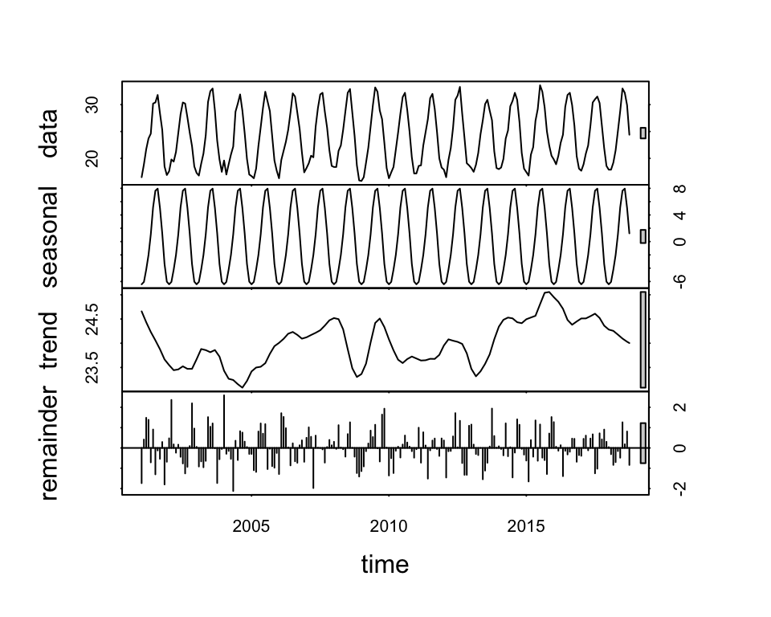
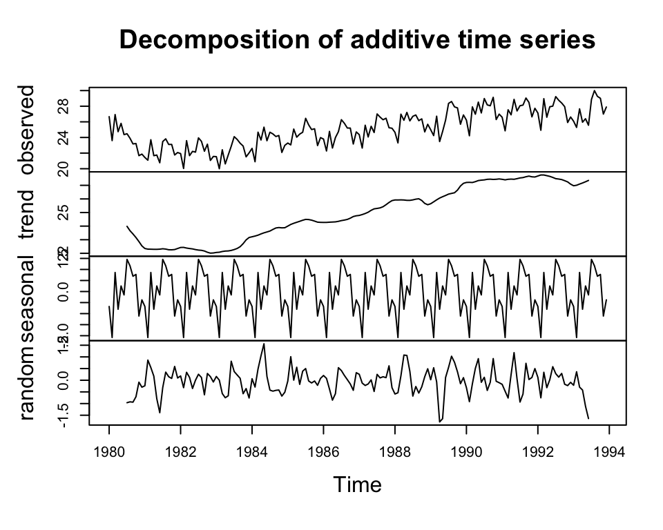
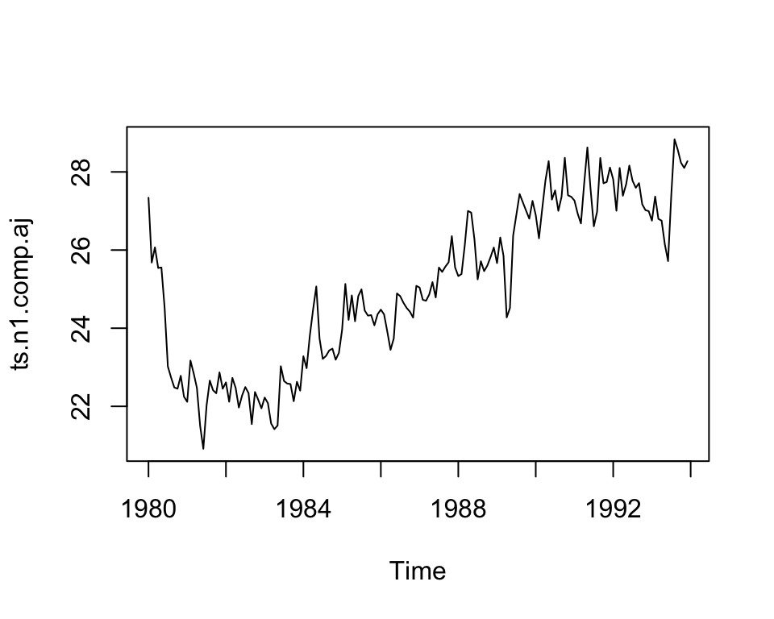
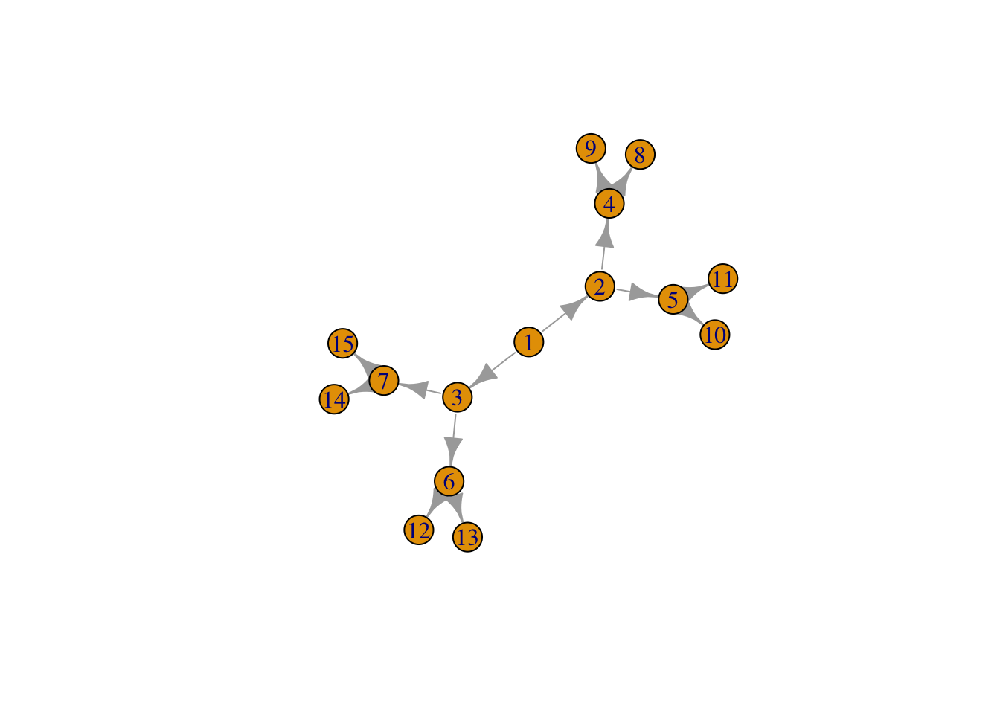
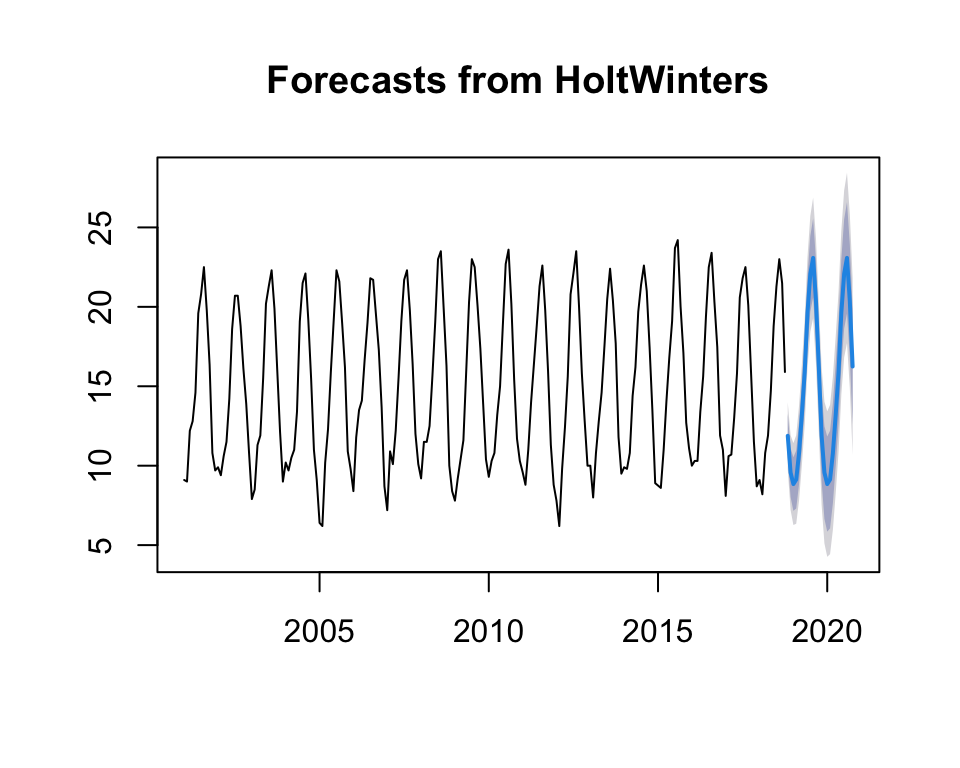
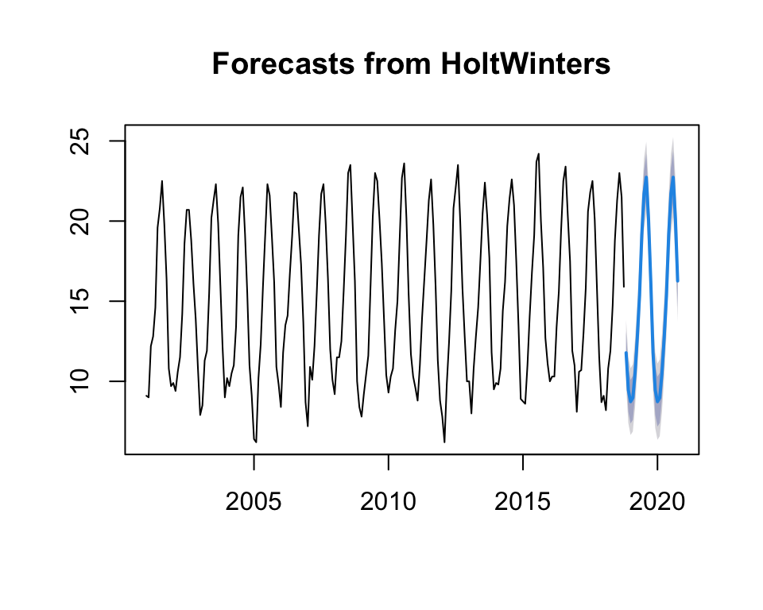
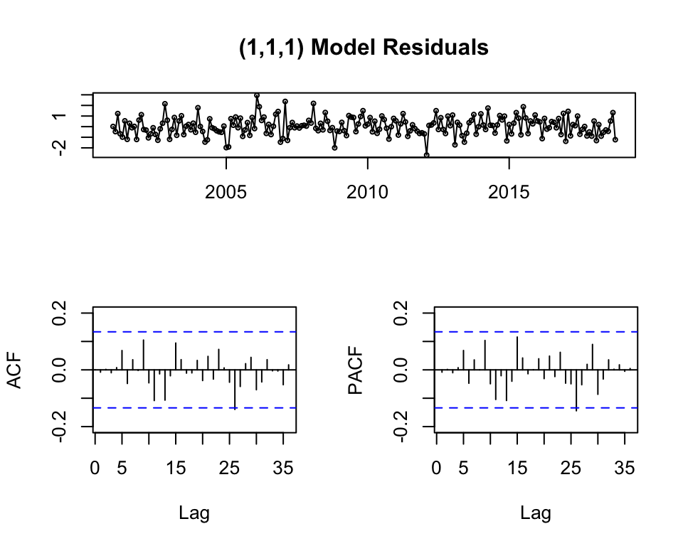

Capítulo 6 Series Temporales
6.2 Introduction
Forecasting is one of the principal applications in data science.
See Forecasting: Principles and Practice
Tell us what the future holds, so we may know that you are gods. (Isaiah 41:23)
Forecasting is the set of techniques modelling how to predict the future as accurately as possible, given all of the information available, including historical data and any future data. These methods try to extrapolate trend and seasonal patterns
Applications of Forecasting
- Medicine, epidemiology,
- planning for the economy features of a country, financial institutions, pocily organizations,
- weather, global temperature changes
- scheduling in bussiness,
- marketing,
- predicting sales in a ship,
- finance and risk management,
- prediction of population in a country, in a region,
- seismic recordings
- planning th stock of product in a online shop,
- deciding whether to build another power generation plant,
- scheduling personal in a call centre depending of the number of calls,
- deciding capital investments,
6.3 Time series analysis
The study of adjacent points using conventional statistical methods have problems.
- Conventional statistical methods are dependent on the assumption that these adjacent observations are independent and identically distributed.
- The temporal data appears temporal correlations and ad-hoc techniques have been developed to treat these data.
Basic steps
- Problem study
- Data collection
- Data analysis
- Model selection and fitting
- Model validation
- Forecasting model deployment
- Monitoring forecasting model performance
6.4 Time Series in R
6.4.1 Importing time series
To analyse your time series data we need to read it into R, and to plot the time series.
You can read data into R using scan(), which assumes that your data for successive time points is in a simple text file with one column.
The file ts_k1.dat contains data about average business sales of a product.
[1] 60 43 67 50 56 42
The next step is to store the data in a time series object in R.
A time series is a list of numbers with temporal information stored as a ts object in R
There is a lot of packages and functions to deal with time series. Firstly, we will use ts function, which is used to create time-series objects.
See ts-objects.
Time Series: Start = 1 End = 42 Frequency = 1 [1] 60 43 67 50 56 42 50 65 68 43 65 34 47 34 49 41 13 35 53 56 16 43 69 59 48 [26] 59 86 55 68 51 33 49 67 77 81 67 71 81 68 70 77 56
If the data set has values for periods less than one year, for example, monthly or quarterly, one can specify the number of times that data was collected per year by using the ‘frequency’ parameter in the ts function.
Dataset of unemployment in a city:
Jan Feb Mar Apr May Jun Jul Aug Sep Oct1980 26.663 23.598 26.931 24.740 25.806 24.364 24.477 23.901 23.175 23.227 1981 21.439 21.089 23.709 21.669 21.752 20.761 23.479 23.824 23.105 23.110 1982 21.937 20.035 23.590 21.672 22.222 22.123 23.950 23.504 22.238 23.142 1983 21.548 20.000 22.424 20.615 21.761 22.874 24.104 23.748 23.262 22.907 1984 22.604 20.894 24.677 23.673 25.320 23.583 24.671 24.454 24.122 24.252 1985 23.287 23.049 25.076 24.037 24.430 24.667 26.451 25.618 25.014 25.110 1986 23.798 22.270 24.775 22.646 23.988 24.737 26.276 25.816 25.210 25.199 1987 24.364 22.644 25.565 24.062 25.431 24.635 27.009 26.606 26.268 26.462 1988 24.657 23.304 26.982 26.199 27.210 26.122 26.706 26.878 26.152 26.379 1989 24.990 24.239 26.721 23.475 24.767 26.219 28.361 28.599 27.914 27.784 1990 26.217 24.218 27.914 26.975 28.527 27.139 28.982 28.169 28.056 29.136 1991 26.589 24.848 27.543 26.896 28.878 27.390 28.065 28.141 29.048 28.484 1992 27.132 24.924 28.963 26.589 27.931 28.009 29.229 28.759 28.405 27.945 1993 26.076 25.286 27.660 25.951 26.398 25.565 28.865 30.000 29.261 29.012 Nov Dec 1980 21.672 21.870 1981 21.759 22.073 1982 21.059 21.573 1983 21.519 22.025 1984 22.084 22.991 1985 22.964 23.981 1986 23.162 24.707 1987 25.246 25.180 1988 24.712 25.688 1989 25.693 26.881 1990 26.291 26.987 1991 26.634 27.735 1992 25.912 26.619 1993 26.992 27.897
ts_f1.dat dataset contains monthly unemployment rates in a city.
Jan Feb Mar Apr May Jun Jul1987 1664.81 2397.53 2840.71 3547.29 3752.96 3714.74 4349.61 1988 2499.81 5198.24 7225.14 4806.03 5900.88 4951.34 6179.12 1989 4717.02 5702.63 9957.58 5304.78 6492.43 6630.80 7349.62 1990 5921.10 5814.58 12421.25 6369.77 7609.12 7224.75 8121.22 1991 4826.64 6470.23 9638.77 8821.17 8722.37 10209.48 11276.55 1992 7615.03 9849.69 14558.40 11587.33 9332.56 13082.09 16732.78 1993 10243.24 11266.88 21826.84 17357.33 15997.79 18601.53 26155.15 Aug Sep Oct Nov Dec 1987 3566.34 5021.82 6423.48 7600.60 19756.21 1988 4752.15 5496.43 5835.10 12600.08 28541.72 1989 8176.62 8573.17 9690.50 15151.84 34061.01 1990 7979.25 8093.06 8476.70 17914.66 30114.41 1991 12552.22 11637.39 13606.89 21822.11 45060.69 1992 19888.61 23933.38 25391.35 36024.80 80721.71 1993 28586.52 30505.41 30821.33 46634.38 104660.67
6.4.2 Displaying time series
Let us make a basic plot of the time series data (for the two first datasets):
In the second one, there seems to be seasonal variation in the number of unemployees per month: There is a peak every summer, and a trough every winter.
The plot for the third dataset is the following:

The size of the seasonal fluctuations and random fluctuations seem to increase with the level of the time series. In these cases it is reasonable to transform the time series by calculating the natural logarithm of the original data.

See time plots.
6.5 Time Series Components
A time series has usually a trend component and an irregular component and, if it turns out to be a seasonal time series, a seasonal component as well.

6.6 Other packages
base R: times series class named ts. too restrictive, functiones associated limited
zoo, xts packages: to represent time series
special structure for time series
many functions interestings
Exercise
Make an .rmd with a mini-tutorial on the use of the zoo and xts packages, applying them to a time series (dataset with data from Spain) that you search on the web about electricity consumption, product consumption, etc.
Hand in the homework of the time series topic.
6.7 Basic forecasting methods
We denote \(\hat{y}_{T+h\mid T}\) the value of the variable \(y\) in the time \(T+h\) based on \(y_1, \ldots, y_T\).
The residual will be computed by:
\[e_T=y_T-\hat{y}_{T}\] The forecast error is: \[e_t(T)=y_t-\hat{y}_{t}(t-T)\]

6.7.3 Seasonal naïve method
The prediction will be the same that the value of the variable in the last year in the same time.
\[\hat{y}_{T+h\mid T}= y_{T+h-m(k+1)}\] (where \(m\) is the season in the year and \(k\) is the truncated value of \((h-1)/m\))

6.7.4 Drift method
It is based on naïve method where the amount of change in time (the drift) is set as the average change in the historical data:
\[\hat{y}_{_{T+h\mid T}}=y_{_{T}}+\frac{h}{T-1}\displaystyle\sum_{t=2}^T(y_t-t_{t-1})=y_{_{T}}+h\frac{y_{_T}-y_{_{1}}}{T-1}\]
See all the methods in the same picture - Forecasts for quarterly beer production.
Note: It is necessary the package fpp2 to execute the code in this page.
6.8 Example: Temperature forecast in Malaga - Basic forecasting methods
To analyse the evolution of minimum temperatures since 2001 in Malaga.
First of all we obtain a time-series object with the function ts, as our data are divided into months, we set the parameter frecuency to 12 and we indicate that we start in January 2001. After this, we draw the object obtained:

We decompose the data: Seasonal component, Trend component, Cycle component y residual.

Let’s see if it is seasonal, let’s look at the data by year: 
As we can see, all the years are identical, which indicates that the temperatures repeat annual and monthly cycles.
With these graphs we can see that our series is seasonal, at the beginning of the year it is down, during the year it rises and from August onwards it starts to fall. This cycle is repeated every year.
With this last graph we see the subseries by months. From it we see how each month moves in the same range. With this we confirm that it is a seasonal series.
6.8.3 Seasonal naïve method
This method uses the last year to predict. As we will see in the graph, it generates what has happened in the last year.
6.8.4 Drift method
This method is based on the previous one and that the amount of change over time is set as the average change in the historical data.
6.8.5 Conclusion
My data series as I have mentioned is for minimum temperatures, so these methods are too simple to predict well what will happen with the temperature in the following years. The only model that could be used is the Seasonal naïve method which uses the last year to see what will happen next year. But we still need to use better methods.
6.8.6 Decomposing Time Series
Decomposing a time series means separating it into its constituent components: trend, cycles, irregular, a seasonal component and a remainder component.
If \(S_t\) is the seasonal component, \(T_t\) is the trend-cycle component, and \(R_t\) is the remainder component, we can consider an additive decomposition or a multiplicative decomposition as follows:
Additive decomposition: \[y_t=S_t+T_t+R_t\] Multiplicative decomposition: \[y_t=S_t\times T_t\times R_t\]
Addditve decomposition is adequate when the seasonal part and the trend-cycle does not vary too much.
Multiplicative decomposition is adequate when the amplitude of the seasonal part increases or decreases with the average level of the time series.
Multiplicative decomposition can be transformed into an additive one just by applying logarithms: \[\log y_t= \log S_t + \log T_t +\log R_t\]
6.8.7 Additive decomposition
We describe how decompose a time series considering additive decomposition.
Note: Multiplicative decomposition is similar, except that the subtractions are replaced by divisions.
6.8.8 Non-Seasonal Data
A non-seasonal time series consists of a trend component and an irregular component.
To estimate the trend component of a non-seasonal time series that can be described using an additive model, it is common to use a smoothing method, such as calculating the Simple Moving Average (SMA) of the time series.
The SMA() function in the TTR package is used to smooth time series data using a simple moving average:
\[\hat{y_{_t}}=\frac{1}{m}\displaystyle\sum_{j=-k}^k y_{_{t+j}}\]
To compute the average eliminates randomness in the data.
To specify the order of the simple moving average, the parameter \(n\) will be used. For example, to calculate a simple moving average of order 2, we set \(n=2\) in the SMA() function.

There still appears to be quite a lot of random fluctuations in the time series smoothed using a simple moving average of order 2.
Thus, to estimate the trend component more accurately, we might want to try smoothing the data with a simple moving average of a higher order. This takes a little bit of trial-and-error, to find the right amount of smoothing.
With MA of order 5, and order 9 the trend starts to be clearly identified in the plots.
6.8.9 Seasonal Data
A seasonal time series consists of a trend component, a seasonal component and an irregular component.
We can use the decompose function in R which estimates:
- the trend-cycle component using MA \(\hat{y_t}\),
- the detrended serie \(y_t-\hat{y_t}\)
- the seasonal component \(S_t\), computing the average of the detrended values for that season,
- the random components \(R_t=y_t-\hat{y_t}-S_t\).
To compute the detrended serie in additive decomposition: \(y_t-T_t =S_t+R_t\)
Given the time series ts.n1, we will decompose the time serie using the following:
The estimated seasonal factors are given for the months January-December, and are the same for each year.

The different parts of the decomposed series can be managed as usual:
6.8.10 Seasonal Adjusting
As we have explained, if you have a seasonal time series that can be described using an additive model, you can seasonally adjust the time series by estimating the seasonal component, and subtracting the estimated seasonal component from the original time series.
Jan Feb Mar Apr May Jun Jul Aug1980 27.34019 25.68096 26.06848 25.54168 25.55435 24.51726 23.02095 22.73641 1981 22.11619 23.17196 22.84648 22.47068 21.50035 20.91426 22.02295 22.65941 1982 22.61419 22.11796 22.72748 22.47368 21.97035 22.27626 22.49395 22.33941 1983 22.22519 22.08296 21.56148 21.41668 21.50935 23.02726 22.64795 22.58341 1984 23.28119 22.97696 23.81448 24.47468 25.06835 23.73626 23.21495 23.28941 1985 23.96419 25.13196 24.21348 24.83868 24.17835 24.82026 24.99495 24.45341 1986 24.47519 24.35296 23.91248 23.44768 23.73635 24.89026 24.81995 24.65141 1987 25.04119 24.72696 24.70248 24.86368 25.17935 24.78826 25.55295 25.44141 1988 25.33419 25.38696 26.11948 27.00068 26.95835 26.27526 25.24995 25.71341 1989 25.66719 26.32196 25.85848 24.27668 24.51535 26.37226 26.90495 27.43441 1990 26.89419 26.30096 27.05148 27.77668 28.27535 27.29226 27.52595 27.00441 1991 27.26619 26.93096 26.68048 27.69768 28.62635 27.54326 26.60895 26.97641 1992 27.80919 27.00696 28.10048 27.39068 27.67935 28.16226 27.77295 27.59441 1993 26.75319 27.36896 26.79748 26.75268 26.14635 25.71826 27.40895 28.83541 Sep Oct Nov Dec 1980 22.48338 22.45176 22.78177 22.24682 1981 22.41338 22.33476 22.86877 22.44982 1982 21.54638 22.36676 22.16877 21.94982 1983 22.57038 22.13176 22.62877 22.40182 1984 23.43038 23.47676 23.19377 23.36782 1985 24.32238 24.33476 24.07377 24.35782 1986 24.51838 24.42376 24.27177 25.08382 1987 25.57638 25.68676 26.35577 25.55682 1988 25.46038 25.60376 25.82177 26.06482 1989 27.22238 27.00876 26.80277 27.25782 1990 27.36438 28.36076 27.40077 27.36382 1991 28.35638 27.70876 27.74377 28.11182 1992 27.71338 27.16976 27.02177 26.99582 1993 28.56938 28.23676 28.10177 28.27382 
The seasonal variation has been removed from the seasonally adjusted time series. The seasonally adjusted time series now just contains the trend component and an irregular component.
6.9 Example: Temperature forecast in Malaga - Decomposing Time Series
We have seen that the time series we use is seasonal so we are going to use the method of Additive decomposition.
6.9.1 Additive decomposition
A seasonal time series consists of a trend component, a seasonal component and an irregular component. To decompose it we are going to use decompose.

6.9.2 Seasonal Adjusting
If we have a seasonal time series that can be described using an additive model, we can seasonally adjust the time series by estimating the seasonal component and subtracting the estimated seasonal component from the original time series.
Jan Feb Mar Apr May Jun Jul Aug2001 15.21772 14.62312 16.29322 15.00204 13.99887 15.21996 13.84395 14.84199 2002 16.01772 15.02312 14.69322 13.70204 13.59887 14.21996 13.74395 13.04199 2003 14.01772 14.12312 15.39322 14.10204 14.89887 15.81996 14.34395 14.64199 2004 16.31772 15.32312 14.59322 13.20204 12.79887 14.71996 14.54395 14.44199 2005 12.51772 11.82312 14.29322 14.50204 15.29887 14.71996 15.34395 13.94199 2006 14.51772 17.42312 17.59322 16.30204 16.09887 14.61996 14.84395 14.04199 2007 13.31772 16.52312 14.19322 14.40204 14.89887 14.71996 14.74395 14.64199 2008 15.31772 17.12312 15.59322 14.70204 14.99887 14.61996 16.04395 15.84199 2009 13.91772 14.82312 14.49322 13.80204 15.34887 15.91996 16.04395 14.84199 2010 15.41772 15.92312 14.89322 15.40204 14.39887 14.51996 15.74395 15.94199 2011 15.71772 14.42312 15.09322 16.20204 15.79887 14.41996 14.34395 14.94199 2012 13.91772 11.82312 13.89322 14.60204 14.99887 16.41996 15.14395 15.84199 2013 16.11772 13.62312 14.89322 15.00204 13.99887 13.11996 13.54395 14.74199 2014 16.01772 15.42312 14.89322 16.60204 15.59887 15.31996 14.44395 14.94199 2015 14.86772 14.22312 15.09322 16.30204 16.19887 14.71996 16.74395 16.54199 2016 16.11772 15.92312 14.39322 15.60204 14.99887 15.01996 15.54395 15.74199 2017 14.21772 16.22312 14.79322 15.20204 15.19887 16.21996 14.84395 14.84199 2018 15.21772 13.82312 14.89322 14.10204 14.09887 14.41996 14.34395 15.34199 Sep Oct Nov Dec 2001 14.85424 14.82508 13.62900 14.95081 2002 13.85424 14.52508 16.72900 16.05081 2003 14.95424 14.42508 14.92900 14.25081 2004 14.25424 13.92508 13.82900 14.35081 2005 14.05424 14.62508 13.72900 15.05081 2006 14.55424 15.72508 16.52900 13.95081 2007 14.85424 14.82508 14.82900 15.35081 2008 14.95424 14.72508 12.82900 13.65081 2009 15.15424 15.82508 16.72900 15.65081 2010 15.25424 13.82508 14.52900 15.55081 2011 14.85424 14.42508 14.12900 14.05081 2012 15.05424 14.22508 15.62900 15.25081 2013 15.45424 16.12508 14.62900 14.75081 2014 16.05424 15.92508 16.32900 14.15081 2015 15.05424 15.52508 15.52900 16.35081 2016 15.35424 15.92508 14.72900 16.25081 2017 15.15424 14.22508 14.32900 13.95081 2018 16.55424 14.32508
6.9.3 Forecasts using Exponential Smoothing
Exponential Smoothing considers weigths to the values of the variables: weighted averages of past observations. The weights decrease exponentially for distant values.
6.9.4 Simple Exponential Smoothing
The idea is to consider a weighted average between the value of the variable and the previous one:
\[\hat{y}_{T+1\mid T}=\alpha y_T + (1-\alpha)\hat{y}_{T\mid T-1}\]
If we have into account more past values of the variable, after some computations, the forecast will be:
\[\hat{y}_{T+1\mid T}=\alpha y_T + \alpha(1-\alpha){y}_{T-1}+\alpha(1-\alpha)^2{y}_{T-2}+\ldots \]
The parameter \(\alpha\) controls the rates at which the weights decrease. The weights decrease exponentially and this is the reason of the name of the method.
\(\alpha\) has values between 0 and 1.
\(\alpha\) close to 0, more important are the longer observations - slow learning (past observations have a large influence on forecasts).
\(\alpha\) close to 1, more important the more recent observation s- fast learning (that is, only the most recent values influence the forecasts).
With \(\alpha=0\) or \(\alpha=1\) we have the extreme cases.
If you have a time series that can be described using an additive model with constant level (no clear trend) and no seasonality, you can use simple exponential smoothing to make short-term forecasts.
- The simple exponential smoothing method provides a way of estimating the level at the current time point.
The file ts_p1.dat contains total annual snowfall for a city.

- The mean stays constant at about 25 - roughly constant level.
- The random fluctuations seem to be roughly constant.
Thus, we can make forecasts using simple exponential smoothing.
In R, we can fit a simple exponential smoothing predictive model using the HoltWinters function.
- alpha: Smoothing is controlled by this parameter; the value of alpha lies between 0 and 1 (close to 0 mean that little weight is placed on the most recent observations when making forecasts of future values).
- beta=FALSE: the function will do exponential smoothing.
- gamma=FALSE: a non-seasonal model is fitted.
- seasonal: additive by default or multiplicative seasonal model.
Holt-Winters exponential smoothing without trend and without seasonal component.
Call: HoltWinters(x = ts.p1, beta = FALSE, gamma = FALSE)
Smoothing parameters: alpha: 0.02412151 beta : FALSE gamma: FALSE
Coefficients: [,1] a 24.67819
The output of HoltWinters() tells us that the estimated value of the
alpha parameter is about 0.024. This is very close to zero, telling us
that past observations have more influence on forecasts.

The plot shows the original time series in black, and the forecasts of these values as a red line. The time series of forecasts is much smoother than the time series of the original data here.

The function forecast predicts the value as the previous plot shows.
As a measure of the accuracy of the forecasts, we can calculate the sum
of squared errors for the in-sample forecast errors, that is, the
forecast errors for the time period covered by our original time series.
The sum-of-squared- errors is stored in a named element of the list
variable ts.p1.forecasts called “SSE”, so we can get its value by
typing:
[1] 1828.855
Finally, we try with different values of \(\alpha\) and the errors are computed:
Holt-Winters exponential smoothing without trend and without seasonal component.
Call: HoltWinters(x = ts.p1, alpha = 0.5, beta = FALSE, gamma = FALSE)
Smoothing parameters: alpha: 0.5 beta : FALSE gamma: FALSE
Coefficients:
[,1]
a 26.45644
 [1] 2428.339
Holt-Winters exponential smoothing without trend and without seasonal component.
[1] 2428.339
Holt-Winters exponential smoothing without trend and without seasonal component.
Call: HoltWinters(x = ts.p1, alpha = 0.9, beta = FALSE, gamma = FALSE)
Smoothing parameters: alpha: 0.9 beta : FALSE gamma: FALSE
Coefficients: [,1] a 27.57778 [1] 3399.419
Note: The forecasts made by HoltWinters are stored in the list called
fitted.
Time Series: Start = 1901 End = 1999 Frequency = 1 xhat level 1901 23.56000 23.56000 1902 25.81900 25.81900 1903 22.25590 22.25590 1904 30.34159 30.34159 1905 24.31916 24.31916 1906 23.92392 23.92392 1907 26.16139 26.16139 1908 23.01914 23.01914 1909 30.82291 30.82291 1910 24.55629 24.55629 1911 24.15463 24.15463 1912 31.60246 31.60246 1913 24.09425 24.09425 1914 22.72242 22.72242 1915 22.97224 22.97224 1916 27.38922 27.38922 1917 25.52692 25.52692 1918 25.12469 25.12469 1919 27.49647 27.49647 1920 20.58765 20.58765 1921 24.36076 24.36076 1922 20.54408 20.54408 1923 23.96041 23.96041 1924 27.07404 27.07404 1925 20.20340 20.20340 1926 21.48734 21.48734 1927 26.88973 26.88973 1928 20.17597 20.17597 1929 30.03460 30.03460 1930 23.78446 23.78446 1931 25.64345 25.64345 1932 22.94934 22.94934 1933 22.76993 22.76993 1934 26.00099 26.00099 1935 18.53010 18.53010 1936 28.68201 28.68201 1937 23.50520 23.50520 1938 19.64852 19.64852 1939 20.53185 20.53185 1940 33.85919 33.85919 1941 26.68692 26.68692 1942 19.45369 19.45369 1943 22.69937 22.69937 1944 22.25894 22.25894 1945 22.18789 22.18789 1946 19.11179 19.11179 1947 27.30018 27.30018 1948 31.74602 31.74602 1949 23.21760 23.21760 1950 27.13476 27.13476 1951 22.14448 22.14448 1952 17.45145 17.45145 1953 28.27714 28.27714 1954 31.26771 31.26771 1955 26.75177 26.75177 1956 23.73518 23.73518 1957 25.25152 25.25152 1958 21.71315 21.71315 1959 24.68932 24.68932 1960 32.94293 32.94293 1961 23.69729 23.69729 1962 19.30773 19.30773 1963 27.52677 27.52677 1964 26.29668 26.29668 1965 27.98267 27.98267 1966 33.47027 33.47027 1967 33.78503 33.78503 1968 30.63050 30.63050 1969 28.19105 28.19105 1970 27.24511 27.24511 1971 24.68451 24.68451 1972 20.78345 20.78345 1973 26.05435 26.05435 1974 26.91443 26.91443 1975 19.98044 19.98044 1976 26.96404 26.96404 1977 24.16140 24.16140 1978 21.52314 21.52314 1979 27.48731 27.48731 1980 23.09773 23.09773 1981 20.12977 20.12977 1982 27.15898 27.15898 1983 22.03890 22.03890 1984 23.37189 23.37189 1985 22.91119 22.91119 1986 18.21212 18.21212 1987 22.10721 22.10721 1988 23.16272 23.16272 1989 22.26927 22.26927 1990 20.98293 20.98293 1991 36.38829 36.38829 1992 22.22383 22.22383 1993 22.89538 22.89538 1994 24.12354 24.12354 1995 23.12135 23.12135 1996 23.61514 23.61514 1997 26.43651 26.43651 1998 25.46765 25.46765 1999 24.85777 24.85777
6.10 Forecasting using forecast package
We can make forecasts for further time points by using the
forecast.HoltWinters function in the R forecast package.
When using the forecast.HoltWinters function, as its first argument
(input), you pass it the predictive model that you have already fitted
using the HoltWinters function.
You specify how many further time points you want to make forecasts for
by using the “h” parameter in forecast.HoltWinters().
The output for the next 20 years is:
Point Forecast Lo 80 Hi 80 Lo 95 Hi 952000 24.67819 19.17493 30.18145 16.26169 33.09470 2001 24.67819 19.17333 30.18305 16.25924 33.09715 2002 24.67819 19.17173 30.18465 16.25679 33.09960 2003 24.67819 19.17013 30.18625 16.25434 33.10204 2004 24.67819 19.16853 30.18785 16.25190 33.10449 2005 24.67819 19.16694 30.18945 16.24945 33.10694 2006 24.67819 19.16534 30.19105 16.24701 33.10938 2007 24.67819 19.16374 30.19265 16.24456 33.11182 2008 24.67819 19.16214 30.19425 16.24212 33.11427 2009 24.67819 19.16054 30.19584 16.23968 33.11671 2010 24.67819 19.15895 30.19744 16.23724 33.11915 2011 24.67819 19.15735 30.19904 16.23479 33.12159 2012 24.67819 19.15576 30.20063 16.23235 33.12403 2013 24.67819 19.15416 30.20223 16.22991 33.12647 2014 24.67819 19.15257 30.20382 16.22748 33.12891 2015 24.67819 19.15097 30.20542 16.22504 33.13135 2016 24.67819 19.14938 30.20701 16.22260 33.13379 2017 24.67819 19.14778 30.20860 16.22016 33.13623 2018 24.67819 19.14619 30.21020 16.21773 33.13866 2019 24.67819 19.14460 30.21179 16.21529 33.14110
The forecast for a year, a 80% prediction interval for the forecast, and a 95% prediction interval for the forecast.
Plotting the predictions:

The forecasts for 2000-2020 are plotted as a blue line, the 80% prediction interval as a dark blue shaded area, and the 95% prediction interval as a grey shaded area.
Forecast errors
Forecast errors are stored in the element residuals.
- If the predictive model cannot be improved upon, there should be no correlations between forecast errors for successive predictions.
- If there are correlations between forecast errors for successive predictions, it is likely that the simple exponential smoothing forecasts could be improved upon by another forecasting technique.
To figure out whether this is the case, we can obtain a correlogram of
the in-sample forecast errors. We can calculate a correlogram of the
forecast errors using the acf function in R.
acf computes (and plots, by default) the estimation of the
autocovariance or AutoCorrelation Function (ACF).

The autocorrelation at lag 3 is just touching the significance bounds (significant evidence for non-zero correlations).
To test whether there is significant evidence for non-zero correlations at lags, we can carry out a Ljung- Box test. This can be done in R using the Box.test function.
Box-Ljung testdata: ts.p1.forecasts2$residuals X-squared = 17.401, df = 20, p-value = 0.6268
The p-value is 0.6, so there is little evidence of non-zero autocorrelations in the in-sample forecast errors at lags 1-20.
6.11 Example: Temperature forecast in Malaga - Exponential Smoothing
Analyse the evolution of minimum temperatures since 2001 in Malaga with the methods seen in this document. Malaga with the methods seen in this document**.
We obtain a time-series object with the ts function. data are divided into months, the parameter frequency is set to 12 and we indicate that we start in January 2001. After this, we draw the object:

Forecasts using Exponential Smoothing
Exponential Smoothing considers weights on variable values: weighted averages of past observations. The weights decrease exponentially for distant values.
6.11.1 Simple Exponential Smoothing
- alpha parameter of Holt-Winters Filter.
- beta parameter of Holt-Winters Filter. If set to FALSE, the function will do exponential smoothing.
- gamma parameter used for the seasonal component. If set to FALSE, an non-seasonal model is fitted.
Looking at these parameters we have to assemble a model with beta=FALSE as we want exponential smoothing.
Holt-Winters exponential smoothing without trend and with additive seasonal component.
Call: HoltWinters(x = ts.p1, beta = FALSE)
Smoothing parameters: alpha: 0.1412013 beta : FALSE gamma: 0.2045694
Coefficients: [,1] a 14.8002193 s1 -3.0179721 s2 -5.3483612 s3 -6.0676567 s4 -5.8300885 s5 -4.2971166 s6 -2.0597869 s7 0.5443399 s8 4.3512303 s9 6.9081866 s10 7.9327353 s11 5.3361482 s12 1.4610327

The graph shows the original time series in black, and forecasts of these values as a red line. The forecast time series is very close to the original data.
We now draw the forecast using forecast.
As we can see it fits quite well with what is happening in recent years.
Let’s try a higher alpha value:
Holt-Winters exponential smoothing without trend and with additive seasonal component.
Call: HoltWinters(x = ts.p1, alpha = 0.5, beta = FALSE)
Smoothing parameters: alpha: 0.5 beta : FALSE gamma: 0.3927417
Coefficients: [,1] a 15.0512589 s1 -3.1697282 s2 -5.4838631 s3 -6.2075694 s4 -5.9219038 s5 -4.2667725 s6 -1.8548302 s7 0.8149946 s8 4.5957651 s9 7.0279317 s10 8.0279557 s11 5.3161216 s12 1.1929326

Holt-Winters exponential smoothing without trend and with additive seasonal component.
Call: HoltWinters(x = ts.p1, alpha = 0.9, beta = FALSE)
Smoothing parameters: alpha: 0.9 beta : FALSE gamma: 0.9999496
Coefficients: [,1] a 14.7654331 s1 -3.0613814 s2 -5.3688209 s3 -5.8712039 s4 -5.2291009 s5 -3.4451379 s6 -1.4794315 s7 0.5904564 s8 4.0760361 s9 6.5257969 s10 7.4170932 s11 4.6994542 s12 1.1345783
As we can see there is not much difference between the first model and the other 2 created later, so the alpha value generated by the first model is the optimal one. We can see that the higher the alpha value, the narrower the fixed values, and the gamma values increase along with alpha.
6.11.2 Forecasting using forecast package
When we use the forecast.HoltWinters function, as the first argument, it is passed the predictive model that we have already set using the HoltWinters function.
To specify how many additional time points we want to predict, we use the parameter “h”.
The prediction for the next 2 years is:
Point Forecast Lo 80 Hi 80 Lo 95 Hi 95Nov 2018 11.782247 10.448881 13.11561 9.743039 13.82146 Dec 2018 9.451858 8.105265 10.79845 7.392421 11.51129 Jan 2019 8.732563 7.372871 10.09225 6.653094 10.81203 Feb 2019 8.970131 7.597467 10.34279 6.870822 11.06944 Mar 2019 10.503103 9.117587 11.88862 8.384139 12.62207 Apr 2019 12.740432 11.342183 14.13868 10.601995 14.87887 May 2019 15.344559 13.933692 16.75543 13.186823 17.50229 Jun 2019 19.151450 17.728075 20.57482 16.974587 21.32831 Jul 2019 21.708406 20.272634 23.14418 19.512582 23.90423 Aug 2019 22.732955 21.284891 24.18102 20.518333 24.94758 Sep 2019 20.136368 18.676116 21.59662 17.903106 22.36963 Oct 2019 16.261252 14.788913 17.73359 14.009504 18.51300 Nov 2019 11.782247 10.250481 13.31401 9.439613 14.12488 Dec 2019 9.451858 7.908565 10.99515 7.091594 11.81212 Jan 2020 8.732563 7.177827 10.28730 6.354800 11.11032 Feb 2020 8.970131 7.404038 10.53622 6.574998 11.36526 Mar 2020 10.503103 8.925733 12.08047 8.090724 12.91548 Apr 2020 12.740432 11.151866 14.32900 10.310930 15.16993 May 2020 15.344559 13.744875 16.94424 12.898054 17.79106 Jun 2020 19.151450 17.540725 20.76217 16.688058 21.61484 Jul 2020 21.708406 20.086715 23.33010 19.228243 24.18857 Aug 2020 22.732955 21.100371 24.36554 20.236134 25.22978 Sep 2020 20.136368 18.492964 21.77977 17.622999 22.64974 Oct 2020 16.261252 14.607099 17.91541 13.731443 18.79106

The forecasts for the next 2 years are represented as a blue line, the 80% prediction interval as a dark grey shaded area and the 95% prediction interval as a grey shaded area.
Forecast errors
Errors are stored in residuals.
- If the model cannot be improved, there should be no correlations between forecast errors for successive predictions.
- If there are correlations between forecast errors for successive predictions, it is likely that the predictions can be improved with another technique.
To find out which is the case, we can obtain a correlation of the errors. We can calculate it using the acf function. acf calculates the estimate of the autocovariance or autocorrelation function (ACF).
Let’s see what happens, we use acf with residuals and lag max 24.

We performed a Ljung Box text to see if there is significant evidence of non-zero correlations in the lag.
Box-Ljung testdata: ts.p1.forecasts2$residuals X-squared = 41.723, df = 24, p-value = 0.01386
As we can see, the p-value is 0.01, which tells us that there is evidence of autocorrelations other than 0.
Note: The ACF (AutoCorrelation Function) chart is used to identify non-stationary time series. Stationary: if the ACF is rapidly declining
6.12 ARIMA methods
The difference between exponential smoothing models and ARIMA models is that the former are based on a description of the trend and seasonality of the data, while ARIMA models study the autocorrelations of the data.
As we have already seen, the name ARIMA comes from AutoRegressive Integrated Moving Average.
AR: the study variable is analysed using the above values (lag).
MA: the regression error is a linear combination of current and past values of the signal.
I: replaces the value of the variable by the difference between the values and the previous values (one or more times).
ARIMA models can be obtained following the Box-Jenkins method.
6.12.1 Stationarity
A time series is said to be stationary when it does not depend on the instant of observation (white noise series).
The autocovariance function is defined as \[Cov(y_t,y_{t+k}) = \gamma(k), \forall k\]
That is, the covariance does not depend on time, only on the parameter \(k\) (lag).
If a series has a trend or stationarity it is not stationary.
A time series that has a cyclical component is stationary.
6.13 Autoregressive models - AR(p)
The current value of the \(x_t\) series can be explained as a function of \(p\) past values, \(x_{t-1},x_{t-2},x_{t-p}\), where \(p\) determines the number of past steps needed for the prediction.
\[ y_t=c+\phi_1y_{t-1}+\phi_2y_{t-2}+\cdots+\phi_py_{t-p}+\epsilon_t \]
- \(\epsilon_t\): Gaussian white noise with mean 0 and variance \(sigma^2_epsilon\).
- If the mean is non-zero, \(c\) takes the value \(c = \mu(1-\phi_1-\cdots-\phi_p)\).
This is an autoregressive model of order \(p\) that applies to stationary models.
6.14 Moving average models
As an alternative to the autoregressive representation where \(x_t\) (on the left-hand side of the equation) are assumed to be linear combinations using moving averages of order \(q\), \(MA(q)\). We assume white noise \(epsilon_t\). Model MA(\(q\)):
\[ y_t=c+\epsilon_t+\theta_1\epsilon_{t-1}+\theta_2\epsilon_{t-2}+\cdots+\theta_q\epsilon_{t-q} \]
As with autoregressive models, changing the parameters affects the time series patterns and changing the error term changes the scale.
6.14.1 Differentiation
To convert a non-stationary time series into a stationary time series, the differences between consecutive signal values are calculated (trend and seasonality are removed or reduced).
The following equation allows to calculate the differences between consecutive signal values:
\[ y'_t=y_t-y_{t-1} \]
If the differentiated series is white noise:
\[ y_t-y_{t-1}=\epsilon_t \] (\(\epsilon_t\) denotes white noise)
A closely related model allows the difference to have a non-zero mean. \[ y_t-y_{t-1}=c+\epsilon_t \] where \(c\) is the average of the changes between consecutive observations.
6.15 Seasonal differencing
A seasonal difference is the difference between one observation and the previous observation: \[ y'_{_t}=y_{_t}-y_{_{t-m}} \] where \(m\) is the number of seasons.
lynx <- read.csv(file = "data/annual-number-of-lynx-trapped-ma.csv", header = TRUE, quote = '\"')
lynx.ts <- ts(lynx$Lynx, frequency = 1, start = c(1821))
electricity <- read.csv(file = "data/monthly-electricity-production-i.csv", header = TRUE, quote = '\"')
electricity.ts <- ts(electricity$Million.kilowatt.hours, frequency = 12, start = c(1956, 1))
Figure 6.1: Although there are cycles, they are not fixed in time.
Figure 6.2: Clear trend indicates this is not a stationary series.
Figure 6.3: Lynx trapped ACF plot (left) and kilowatts per hour in Australia ACF plot (right).
6.15.1 Parameters in ARIMA methods.
Therefore, in an ARIMA model we will use three parameters: (p, d, q).
- p: refers to the use of past values of the series. It specifies the number of lags used in the model. For example, AR(2) or, ARIMA(2,0,0) specifies the use of two lags of the series.
- d: degree of differentiation. Differencing your current and previous values d times.
- q: model error as a combination of q previous error terms.
ARIMA works best for long and stable series.
6.16 Non-seasonal ARIMA models
If we combine differencing and autoregression we obtain a non-seasonal ARIMA model: \[ y'_t = c + \phi_1y'_{t-1}+\cdots+\phi_py'_{t-p}+\theta_1\epsilon_{t-1}+\cdots+\theta_q\epsilon_{t-q}+\epsilon_t \] where \(y'_t\) is the series to which differencing has been applied. These models are represented as ARIMA(\(p,d,q\)), where \(d\) represents the degree of differencing.
6.17 Auto-ARIMA model
In R we have functions that automatically calculate the parameter values of an ARIMA model.
The auto.arima() function is a modification of the Hyndman-Khandakar algorithm.
R’s auto.arima() function combines tests, and minimisations to obtain an ARIMA model. By default, it can use initial approximations to speed up the model search (approximation=TRUE/FALSE).
If this does not allow to find a good model (minimum AICc) a larger set of models can be searched with the argument stepwise=FALSE. See (forecasting?) for more on this topic.
To choose a custom model for a non-seasonal series, we will use the Arima() function as follows:
Draw the dataset and identify outliers.
Transform the data to stabilise the variance.
If the data is not stationary use differencing until it is.
Analyse ACF/PACF for an ARIMA(\(p,d,0\)) or ARIMA(\(0,d,q\)) model.
Try to pick your model and use AICc to find the best one.
Check that the residuals behave like white noise:
- if this is not satisfied look for another model
- if this is true, we can use the model to predict
6.18 Example: Temperature forecast in Malaga - Modelos ARIMA
Analyse the evolution of the minimum temperatures since 2001 in Malaga with the methods seen in this document.
We obtain a time-series object with the ts function, as our data are divided into months, we set the parameter frequency to 12 and we indicate that we start in January 2001. Then we draw the object obtained:

ARIMA models
We decompose the data: Seasonal component, Trend component, Cycle component y residual.
Previously we have seen that the series is stationary, but to fit an ARIMA model requires the series to be stationary.
Augmented Dickey-Fuller Testdata: obj.ts Dickey-Fuller = -14.33, Lag order = 5, p-value = 0.01 alternative hypothesis: stationary
We see that it is stationary.
We fix an ARIMA model using auto.arima:
Series: deseasonal_cnt ARIMA(1,1,1)
Coefficients: ar1 ma1 0.3684 -0.9799 s.e. 0.0668 0.0175
sigma^2 = 0.7702: log likelihood = -274.66 AIC=555.32 AICc=555.44 BIC=565.41

As we can see, even lag=23 is equal, so p or q is 23.
Call: arima(x = deseasonal_cnt, order = c(1, 1, 23))
Coefficients: ar1 ma1 ma2 ma3 ma4 ma5 ma6 ma7 -0.7624 0.1627 -0.6937 -0.1923 -0.0753 0.0409 -0.1322 -0.0993 s.e. 0.2475 0.2563 0.1611 0.1147 0.0880 0.0930 0.1067 0.1014 ma8 ma9 ma10 ma11 ma12 ma13 ma14 ma15 ma16 0.0485 0.2009 0.0295 -0.2316 -0.1224 -0.1785 0.0240 0.3970 0.1431 s.e. 0.0936 0.0982 0.0963 0.1006 0.0939 0.0922 0.0978 0.1027 0.1168 ma17 ma18 ma19 ma20 ma21 ma22 ma23 -0.1927 -0.2143 0.0691 0.1088 0.1423 -0.0907 -0.0931 s.e. 0.0902 0.1099 0.0969 0.1216 0.1053 0.1051 0.1117
sigma^2 estimated as 0.6437: log likelihood = -261.09, aic = 572.19 
We forecast for the next 30 months: